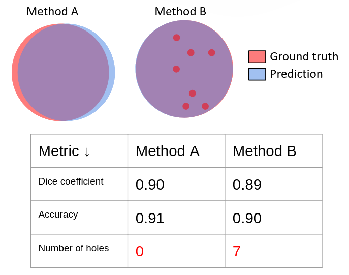

Deep learning-based image segmentation methods currently achieve state-of-the-art performance, but they lack guarantees on structural connectivity at inference time. For example, these models may fail to preserve the correct topology of anatomies like blood vessels, which we know should remain connected. This limitation underscores the need for methods that explicitly improve topological accuracy, and topology-level evaluation metrics, such as Betti errors (which quantify discrepancies in connected components and holes).
|  |
| Pixel-level metrics (Dice coefficient, accuracy) are important to measure, but, alone, they do not reflect segmentation quality—for that, distance-level and topology-level metrics can be complementary measured. |
Current datasets used to evaluate topology-focused methods have limitations that make it difficult to determine whether methods truly improve topology accuracy. For example, suppose a method demonstrates better topological accuracy across multiple blood vessel segmentation datasets for fundus retina images. Claiming that this method universally improves topology would be an overgeneralization; the improvements might instead stem from factors like:
In addition to the inability of separating dataset task from dataset challenge, existing datasets that are popular for evaluating topology loss functions have several critical issues. These issues have not been reported or discussed. If they were tackled in previous work, it is unclear how, hindering reproducibility.
❌ Running time and GPU requirements have been largely unreported. This is important because certain methods (e.g., those based on persistence homology) are extremely time consuming. We report running time and GPU mem. requirements in Appendix O.
❌ Experiments have been run with only one random seed (see Table 1 in Appendix D). We observed that any topology loss function can be made look advantageous if the "right" random seed is chosen (see Table 7 in Appendix I)
❌ Experiments have been run utipzing no data augmentation (see Table 1 in Appendix D). If the advantageousness of a method disappears when using data augmentation, is it really useful?
❌ Experiments have been run utipzing the old 2015 UNet architecture (see Table 1 in Appendix D). If the advantageousness of a method disappears when using a more modern architecture (e.g., the one used in nnUNet), is the method really useful?
🧱 TopoMortar is a novel dataset designed to rigorously evaluate whether topology-focused methods do truly improve topology accuracy. Unlike existing datasets, TopoMortar:
This controlled approach enables researchers to determine if and when topology improving methods do actually work, rather than just whether they improve performance on datasets with varied challenges (e.g., class imbalance, noisy labels) and characteristics.
| Dataset size | 420 images (PNG) (291 MB) |
| Image size | 512 x 512 |
| Classes | 0: Background, 1: Mortar |
| Fixed training-test-validation set split | ✅ |
| Fixed "small" training set, fixed "large" training set | ✅ |
| Accurate, manually-annotated labels | ✅ Available for all images |
| Noisy labels | ✅ Available for the training and validation sets |
| Pseudo-labels | ✅ Available for the training and validation sets |
| In-distribution test-set images | ✅ |
| Out-of-distribution test-set images | ✅ Angles, Colors, Graffitis, Objects, Occlusion, Shadows |
| Amodal segmentation? | ✅ "Occlusion" test set |
In addition to presenting TopoMortar dataset, we conducted several experiments aiming at answering research questions important for the topology community.
@article{valverde2025topomortar,
title={TopoMortar: A dataset to evaluate image segmentation methods focused on topology accuracy},
author={Valverde, Juan Miguel and Koga, Motoya and Otsuka, Nijihiko and Dahl, Anders Bjorholm},
booktitle={36th British Machine Vision Conference 2025, {BMVC} 2025, Sheffield, UK, November 24-27, 2025},
publisher={BMVA},
year={2025}
}